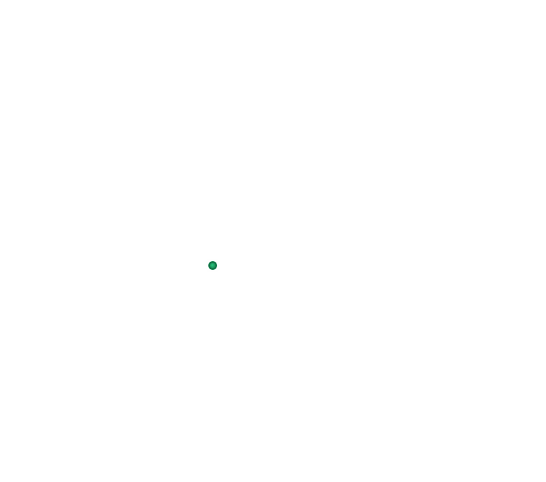
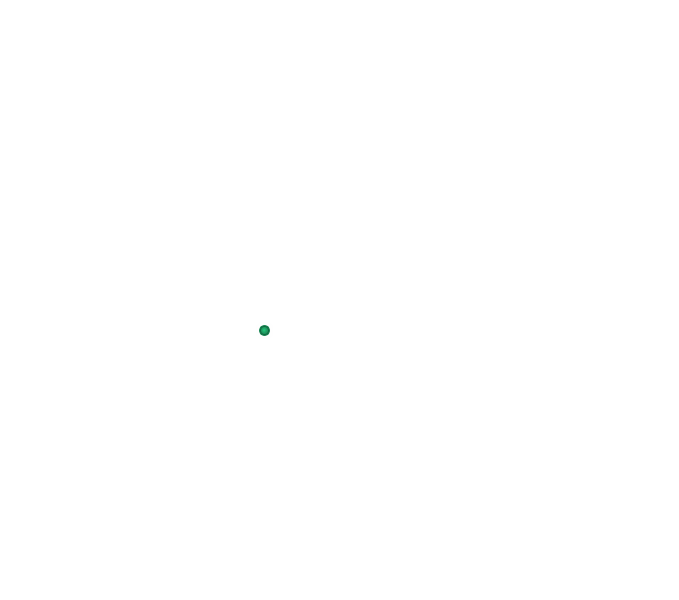

Превеза


 



Πρέβεζα
Γενικές πληροφορίες:
- Χώρα: Ελλάδα
- Έκταση: 668 τ.χλμ.
- Πληθυσμός: 19 042 (2011)
- Περιφέρεια: Ηπείρου
Η πόλη της Πρέβεζας είναι χτισμένη στην είσοδο του Αμβρακικού Κόλπου. Βρίσκεται στη θέση της αρχαίας Βερενίκης, την οποία ίδρυσε ο βασιλιάς της Ηπείρου, Πύρρος, το 290 π.Χ. Η πόλη δημιουργήθηκε στα τέλη του 11ου αι., μετά την ερήμωση της αρχαίας Νικόπολης. Στην ιστορία της γνώρισε πολλούς κατακτητές, μέχρι την ενσωμάτωσή της στο ελληνικό κράτος το 1912. Απέχει περίπου 360 χλμ. βορειοδυτικά από την Αθήνα (μέσω Pίου-Aντιρρίου) και γύρω στα 350 χλμ. νοτιοδυτικά από τη Θεσσαλονίκη (μέσω Ιωαννίνων – Κοζάνης – Βέροιας).
Η Πρέβεζα είναι ευλογημένη με όμορφα τοπία, καταπράσινη φύση, μαγευτικές παραλίες, πλούσια ιστορία και μνημεία και σας προσφέρει πολλές επιλογές για τις διακοπές σας. Κάντε τη βόλτα σας στο λιμάνι και το ιστορικό κέντρο με τα όμορφα παραδοσιακά κτίρια, περπατήστε στον παραλιακό πεζόδρομο που θυμίζει νησί, και δοκιμάστε ντόπιες λιχουδιές σε κάποιο (-α) από τα γραφικά ταβερνάκια και καφενεία που θα βρείτε στα στενά πλακόστρωτα δρομάκια της πόλης.
Περιήγηση στην Πρέβεζα
Επισκεφθείτε τα κάστρα του Αγίου Ανδρέα (18ου αι.), το καλοδιατηρημένο κάστρο-φρούριο της Λασκάρας, που χτίστηκε το 2ο μισό του 19ου αι., και του Παντοκράτορα (αρχές 19ου αι.). Το τελευταίο είναι χτισμένο πάνω στη θάλασσα, στην είσοδο του Αμβρακικού Κόλπου. Ανεβείτε την ώρα του δειλινού και απολαύστε τη μαγευτική θέα!
Ο μητροπολιτικός ναός του Αγίου Χαραλάμπους (18ου αι.), θα σας εντυπωσιάσει εξωτερικά με τον επιβλητικό πύργο του ρολογιού του και εσωτερικά με τον εντυπωσιακό του διάκοσμο. Η οροφή και οι τοίχοι είναι διακοσμημένοι από αγιογράφους της Επτανησιακής σχολής του 18ου αι. με έντονους επηρεασμούς από τη Δυτική τεχνοτροπία. Θαυμάστε το ξυλόγλυπτο τέμπλο του ναού, που κατασκευάσθηκε από Ηπειρώτη τεχνίτη και επιχρυσώθηκε το 19ο αι., τον άμβωνα και τον αρχιερατικό θρόνο.
Περιηγηθείτε στα μουσεία της πόλης, όπως το Δημοτικό Ναυτικό Μουσείο, τη Δημοτική Πινακοθήκη «Ιωάννης Μόραλης», το Δημοτικό Μουσείο Φυσικής Ιστορίας (ανοικτό κατόπιν ραντεβού) και το Λαογραφικό Μουσείο τοπικής κοινότητας Καμαρίνας, στο Ζάλογγο. Επισκεφθείτε τον ανεμόμυλο, στη θέση «Φάρος».
Επιλέξτε μεταξύ των 12 πεζοπορικών διαδρομών που προτείνονται στους επισκέπτες που ενδιαφέρονται να γνωρίσουν τη φύση της ευρύτερης περιοχής. Ιδιαίτερο ενδιαφέρον για περπάτημα αλλά και για κολύμπι παρουσιάζει η διαδρομή που ακολουθεί τη ροή του ποταμού Αχέροντα από τις Πύλες του Άδη έως και τη Γλυκή του Νομού Θεσπρωτίας, μέσα από κατάφυτα βουνά. Το ποτάμι αποτελεί αγαπημένο προορισμό για τους λάτρεις του ράφτινγκ και του κανόε καγιάκ. Απολαύστε μια βόλτα με ποδήλατο, αποτελεί άλλωστε το αγαπημένο μέσο μετακίνησης των ντόπιων. Επιλέξτε είτε μία παραλιακή διαδρομή ξεκινώντας από την πλατεία Ανδρούτσου με κατεύθυνση προς το Βαθύ, ή τη διαδρομή από την πλακόστρωτη παραλία προς την Κυανή Ακτή, τον οικισμό και το κάστρο του Παντοκράτορα, το Αλωνάκι με την πανέμορφη παραλία και τέλος τον οικισμό της Δροσιάς με την φανταστική θέα στο Ιόνιο Πέλαγος. Για τους … προχωρημένους υπάρχει και η πιο απαιτητική διαδρομή από τον Λούρο προς τις Πύλες του Άδη στον Αχέροντα Ποταμό. Ακόμα, κάντε μια εκδρομή στη Μαργαρώνα, γραφική περιοχή ανάμεσα στους κοντινούς στην πόλη οικισμούς του Νεοχωρίου, της Αγ. Τριάδας και του Αγ. Θωμά.
Κοντινές εξορμήσεις στην ευρύτερη περιοχή με αυτοκίνητοΕπισκεφθείτε τη Nικόπολη, 7 χλμ. βόρεια της Πρέβεζας, με σημαντικότατο αρχαιολογικό χώρο ο οποίος ιδρύθηκε από τον Oκταβιανό Aύγουστο, σε ανάμνηση της νίκης του στη ναυμαχία του Aκτίου κατά του Aντωνίου και της Kλεοπάτρας (31 π.X.). Χτίστηκε πάνω σε «λαιμό» πλάτους 3,5 χλμ. μεταξύ της λιμνοθάλασσας Μάζωμα του Αμβρακικού και του Ιονίου Πελάγους. Στα ρωμαϊκά και βυζαντινά χρόνια έλαμψε ως πρωτεύουσα, διοικητικό και εκκλησιαστικό κέντρο της ρωμαϊκής επαρχίας της Παλαιάς Hπείρου. Η πόλη ερημώθηκε, μετά τη βουλγαρική εισβολή, στις αρχές του 10ου αι. Ο αρχαιολογικός χώρος, μεταξύ άλλων, περιλαμβάνει ρωμαϊκά τείχη, ωδείο και θέατρο (1ος αι. μ.Χ.), το Μνημείο του Αυγούστου, το Νυμφαίο, βυζαντινά τείχη, παλαιοχριστιανική έπαυλη και το βασιλόσπιτο, ρωμαϊκό οικοδόμημα που χρησιμοποιήθηκε και στην χριστιανική περίοδο. Τέλος, περιηγηθείτε στο Αρχαιολογικό Μουσείο της Νικόπολης, το οποίο περιέχει εκθέματα από την πόλη των ρωμαϊκών, παλαιοχριστιανικών και βυζαντινών ετών και γνωρίστε τη ζωή των κατοίκων κατά τα μεσαιωνικά και μεταγενέστερα χρόνια.
Αξίζει να επισκεφθείτε τον υγρότοπο του Αμβρακικού Κόλπου, όπου ανάμεσα στις εκβολές των ποταμών Λούρου και Άραχθου κρύβεται ένας οικολογικός παράδεισος που προστατεύεται από τη Σύμβαση Ραμσάρ και ανήκει στο Δίκτυο Natura 2000. Απολαύστε μια ημερήσια εκδρομή με το σκάφος που πραγματοποιεί τον περίπλου του κόλπου ή μισθώστε ένα ιστιοπλοϊκό σκάφος από τις μαρίνες της Πρέβεζας και θαυμάστε τα δελφίνια που οργώνουν τα νερά της περιοχής. Οργανώστε μία εκδρομή στα χωριά Kαμαρίνα - Kρυοπηγή, 25,5 χλμ. βορειοδυτικά, με θέα στον Αμβρακικό και το Ιόνιο. Κοντά στην Kαμαρίνα, υπάρχει ο αρχαιολογικός χώρος της αρχαίας Κασσώπης, πρωτεύουσας του ηπειρώτικου φύλου των Kασσωπαίων, η οποία ιδρύθηκε λίγο πριν τα μέσα του 4ου αι. π.X. και παρήκμασε με την ίδρυση της Νικόπολης.
Λίγο πιο πέρα, 29 χλμ. βορειοδυτικά, φτάνετε στο Ζάλογγο. Στον ιστορικό αυτό τόπο, τον Δεκέμβριο του 1803, οι Σουλιώτισσες γκρεμίστηκαν από τον απόκρημνο βράχο, τραγουδώντας μαζί με τα παιδιά τους, προκειμένου να μην πέσουν στα χέρια των ανδρών του Αλή Πασά. Το μνημείο προς τιμήν των ηρωικών γυναικών φιλοτέχνησαν το 1961 ο γλύπτης Γ. Ζογγολόπουλος και ο αρχιτέκτονας Π. Καραντινός.
Превеза
Основная информация:- Страна: Греция
- Площадь: 668 кв.км.
- Население: 19 042 (2011)
- Регион: Эпир
Город Превеза построен у входа в Амбракийский залив. Он расположен на месте древней Береники, которая была основана царем Эпира Пирром в 290 году до нашей эры. Город был создан в конце 11 века, после запустения древнего Никополя. За свою историю он встретил много завоевателей, вплоть до своего включения в состав греческого государства в 1912 году. Это примерно в 360 км к северо-западу от Афин (через Пио-Антиррио) и примерно в 350 км к юго-западу от Салоников (через Янину - Козани - Верию).
Превеза славится прекрасными пейзажами, зелёной природой, великолепными пляжами, богатой историей и памятниками и предлагает вам множество вариантов для вашего отдыха. прогуляйтесь по островной набережной и попробуйте местные деликатесы в одной из живописных таверн и кафе на узких мощеных улочках города.
Экскурсия по Превезе
Посетите замки Агиос Андреас (18 век), хорошо сохранившийся замок-крепость Ласкара, построенный во 2-й половине 19 века, и Пантократор (начало 19 в.). Последний построен на берегу моря, у входа в Амвракикоский залив. Поднимитесь на него на закате и насладитесь великолепным видом!
Столичная церковь Святого Хараламбоса (18 в.) поразит вас внешне своей внушительной башней с часами и внутренне своим впечатляющим убранством. Потолок и стены украшены агиографами Ионической школы 18 века с сильным влиянием западного стиля. Полюбуйтесь резным деревянным иконостасом церкви, который был построен мастером из Эпирота и позолочен в 19 веке, кафедру и архиепископский престол.
Посетите музеи города, такие как Муниципальный морской музей, Муниципальная галерея "Иоаннис Моралис", Муниципальный музей естественной истории (открыт по предварительной записи) и Музей фольклора местной общины Камарина в Залонгосе. Посетите ветряную мельницу, расположенную на локации "Маяк".
Выберите один из 12 пешеходных маршрутов, предлагаемых посетителям, заинтересованным в знакомстве с природой на более широкой местности. Особый интерес для прогулок и плавания представляет маршрут, который следует по течению реки Ахерон от врат Аида до Глики префектуры Теспротия, через зелёные горы. Река является излюбленным местом для любителей рафтинга и каякинга на каноэ. Наслаждайтесь поездкой на велосипеде, это также любимое средство передвижения местных жителей. Выберите либо прибрежный маршрут, начинающийся с площади Андруцос в направлении Вати, либо маршрут от мощеного пляжа до Лазурного берега, поселения и замка Пантократорас, Алонаки с прекрасным пляжем и, наконец, поселения Дросия с фантастическим видом на Ионическое море. Для... продвинутых есть также самый сложный маршрут от Луроса до врат Аида на реке Ахерон. Кроме того, совершите экскурсию в Маргарону, живописный район среди близлежащих поселений Неохори, Св. Троицы и Св. Фомы.
Близлежащие экскурсии по окрестностям на автомобилеПосетите Никополь, расположенный в 7 км от центра города. к северу от Превезы, с важным археологическим объектом, основанным Октавианом Августом в ознаменование его победы в морской битве при Акциуме против Антония и Клеопатры (31 стр.X.). Он был построен на "горловине" шириной 3,5 километра. между лагуной Амвракикос и Ионическим морем. В римские и византийские времена он блистал как столица, административный и церковный центр римской провинции старый Эпир. Город был обезлюдевшим после болгарского нашествия в начале 10 века. Археологический памятник, среди прочего, включает римские стены, консерваторию и театр (1 век нашей эры), памятник Августу, нимфей, византийские стены, раннехристианская вилла и королевский дом, римское здание, которое также использовалось в христианский период. Наконец, посетите Археологический музей Никополя, в котором собраны экспонаты из города римских, раннехристианских и византийских лет, и познакомьтесь с жизнью жителей в средневековье и более поздние годы.
Стоит посетить водно-болотные угодья залива Амвракикос, где между устьями рек Лурос и Арахтос скрывается экологический рай, охраняемый Рамсарской конвенцией и принадлежащий сети Natura 2000 (сеть охраняемых зон ЕС). Насладитесь однодневной поездкой на лодке, которая совершит круговое плавание по заливу, или возьмите напрокат парусную лодку у причалов Превезы и полюбуйтесь дельфинами, которые бороздят воды этого района. Организуйте экскурсию в деревни Камарина-Криопиги, в 25,5 км. на северо-запад, с видом на Амвракикос и Ионическое море. Недалеко от Камарины находится археологический памятник древнего города Кассопе, столицы континентальной части Кассопеи, который был основан незадолго до середины 4 века до н.э. и потерпел неудачу с основанием Никополиса.
Чуть дальше, 29 км. на северо-западе вы достигнете Залонго. В этом историческом месте в декабре 1803 года (*женщины и дети) сулиоты (*община православных христиан-арнаутов, внесла огромный вклад в освободительную борьбу греков против Османской империи) бросились со скалы, чтобы не попасть в руки людей Али-паши, напевая со своими детьми (*песню смерти). Памятник в честь героических женщин был создан в 1961 году скульптором Г. Зонголопулосом и архитектором О. Карантиносом.